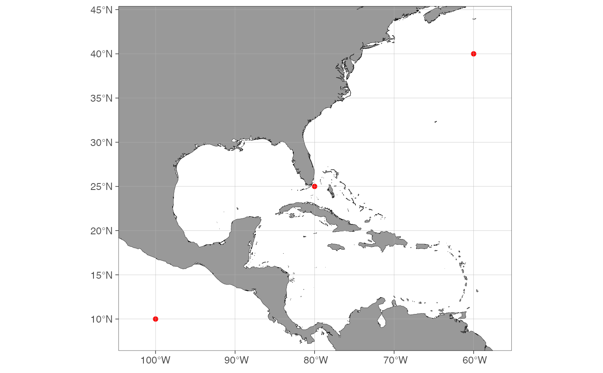
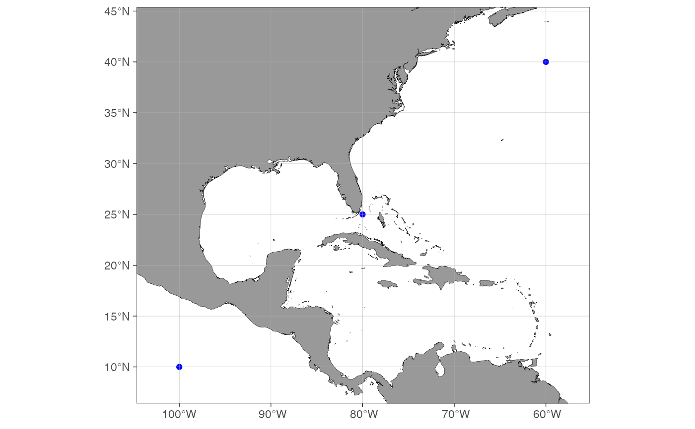
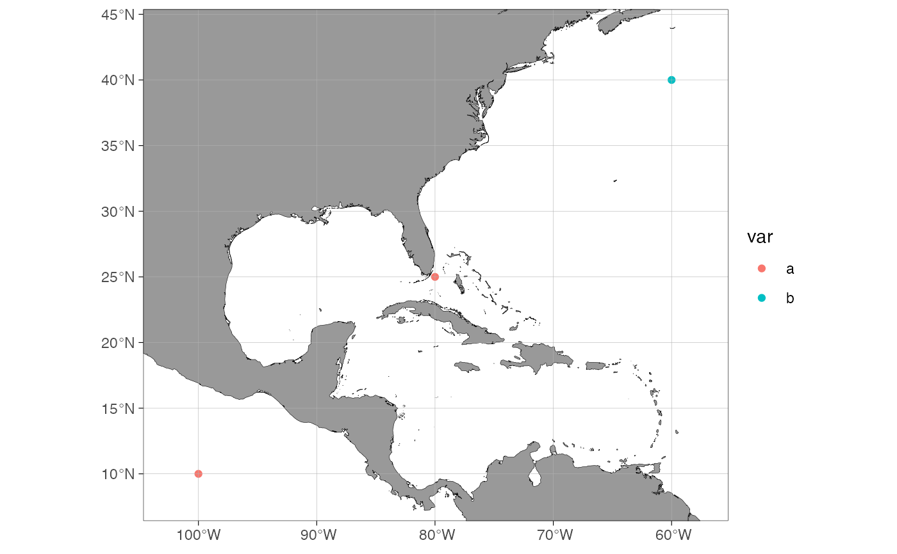
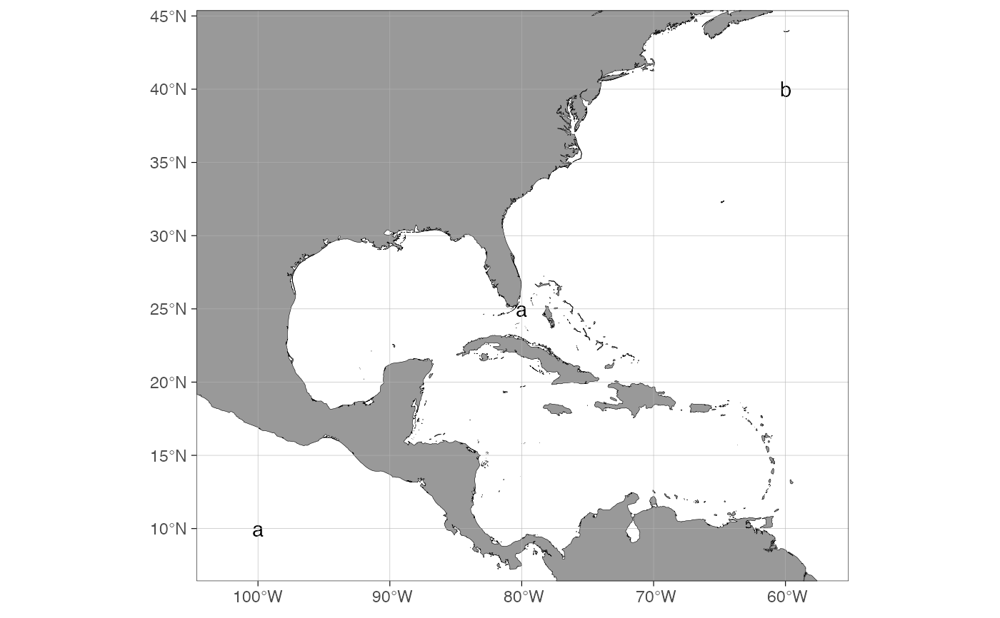
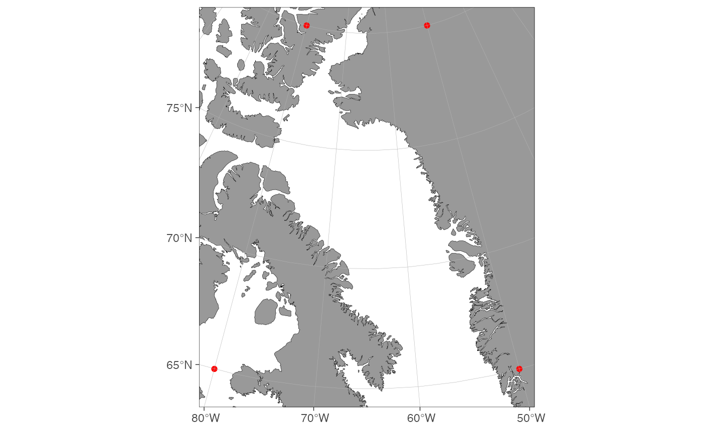

qmap is a shortcut similar to ggplot2's qplot designed to quickly plot data with a limited range of options.
Usage
qmap(
data,
...,
x = NULL,
y = NULL,
geom = "point",
limits = NULL,
shapefiles = NULL,
crs = NULL,
bathymetry = FALSE,
glaciers = FALSE,
rotate = FALSE,
legends = TRUE,
legend.position = "right",
lon.interval = NULL,
lat.interval = NULL,
bathy.style = NULL,
downsample = 0,
bathy.border.col = NA,
bathy.size = 0.1,
bathy.alpha = 1,
land.col = "grey60",
land.border.col = "black",
land.size = 0.1,
gla.col = "grey95",
gla.border.col = "black",
gla.size = 0.1,
grid.col = "grey70",
grid.size = 0.1,
base_size = 11,
projection.grid = FALSE,
expand.factor = 1.1,
verbose = FALSE
)Arguments
- data
Data frame to use.
- x, y, ...
Aesthetics passed into each layer. Longitude and latitude columns are automatically recognized using the
guess_coordinate_columnsfunction.- geom
Character argument specifying geom(s) to draw. Defaults to "point". Other alternatives are "text" and "label". The "text" option can also be triggered by simply mapping a variable to
label(see Examples).- limits
Map limits. One of the following:
numeric vector of length 4: The first element defines the start longitude, the second element the end longitude (counter-clockwise), the third element the minimum latitude, and the fourth element the maximum latitude of the bounding box. Also accepts
sf::st_bboxtype named vectors with limits in any order. The coordinates can be given as decimal degrees or coordinate units for shapefiles used by a projected map. Produces a rectangular map. Latitude limits not given in min-max order are automatically ordered to respect this requirement.single integer between 30 and 88 or -88 and -30 produces a polar map for the Arctic or Antarctic, respectively.
Can be omitted if
dataorshapefilesare defined.- shapefiles
Either a list containing shapefile information or a character argument referring to a name of pre-made shapefiles in
shapefile_list. This name is partially matched. Can be omitted iflimitsordatais defined as decimal degrees.- crs
Coordinate reference system (CRS) for the map. If
NULL(default), the CRS is selected automatically based onlimits,data, orshapefiles. Passed tost_crs. Typically integers giving the EPGS code are the easiest. Cannot be used simultaneously withrotate.- bathymetry
Logical indicating whether bathymetry should be added to the map. Functions together with
bathy.style. See Details.- glaciers
Logical indicating whether glaciers and ice sheets should be added to the map.
- rotate
Logical indicating whether the projected maps should be rotated to point towards the pole relative to the mid-longitude limit.
- legends
Logical indicating whether the legend for bathymetry should be shown.
- legend.position
The position for ggplot2 legend. See the argument with the same name in theme.
- lon.interval, lat.interval
Numeric value specifying the interval of longitude and latitude grids.
NULLfinds reasonable defaults depending onlimits.- bathy.style
Character (plots bathymetry; list of alternatives in Details) or
NULL("raster_binned_blues" ifbathymetry = TRUE) defining the bathymetry style. Partially matched, can be abbreviated, and used to control bathymetry plotting together withbathymetry. See Details.- downsample
Integer defining the downsampling rate for raster bathymetries. A value of 0 (default) does not downsample, 1 skips every second row, 2 every second and third. See
geom_stars- bathy.alpha
Transparency parameter for the bathymetry fill color. See scale_alpha.
- land.col, gla.col, grid.col
Character code specifying the color of land, glaciers, and grid lines, respectively. Use
NAto remove the grid lines.- land.border.col, gla.border.col, bathy.border.col
Character code specifying the color of the border line for land, glacier, and bathymetry shapes.
- land.size, gla.size, bathy.size, grid.size
Numeric value specifying the width of the border line land, glacier and bathymetry shapes as well as the grid lines, respectively. Use the
LSfunction for a specific width in pt. See Details.- base_size
Base size parameter for ggplot. See ggtheme.
- projection.grid
Logical indicating whether the coordinate grid should show projected coordinates instead of decimal degree values. Useful to define limits for large maps in polar regions.
- expand.factor
Expansion factor for map limits. Can be used to zoom in (decrease the value under 1) and out (increase the value over 1) automatically (
data) limited maps. Defaults to 1, which means that outermost data points are located at the boundaries of the plotting region.- verbose
Logical indicating whether information about the projection and guessed column names should be returned as messages. Set to
FALSEto make the function silent.
Value
Returns a ggplot map, which can be assigned to an object and modified as any ggplot object.
See also
Other basemap functions:
basemap(),
shapefile_list(),
transform_coord()
Examples
dt <- data.frame(lon = c(-100, -80, -60), lat = c(10, 25, 40), var = c("a", "a", "b"))
# Quickly see position of data
qmap(dt)

# \donttest{
# Set color
qmap(dt, color = I("blue"))

# Map color to a variable
qmap(dt, color = var)

# Map text to a variable
qmap(dt, label = var)

# All basemap arguments work in qmap()
dt <- data.frame(lon = c(-80, -80, -50, -50), lat = c(65, 80, 80, 65))
qmap(dt, rotate = TRUE)

# }